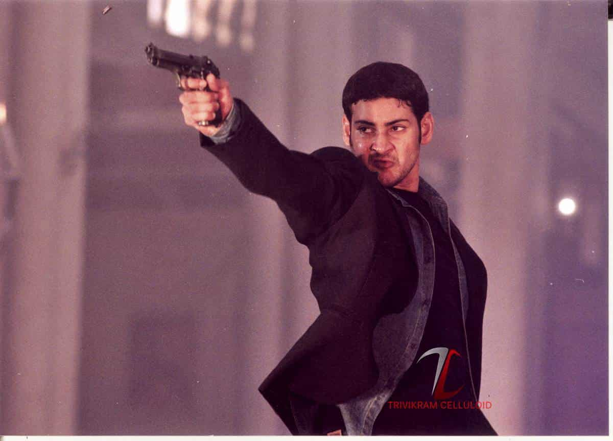
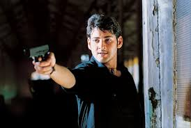
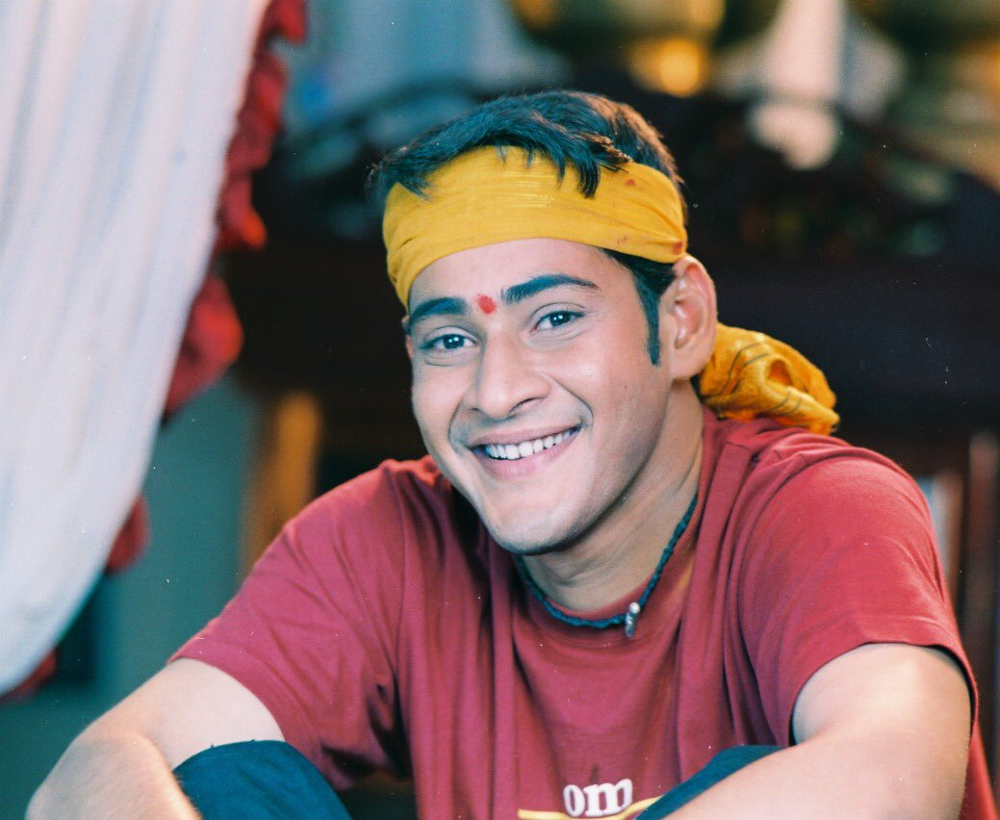

TOP 5 MOVIES OF MAHESH BABU
ATHADU

IMDB : 8.2
ROTTEN TOMATOES : 95%
GENRE : Thriller/Action
BUDGET : 12 crore
COLLECTION : 25 crore
1 NENOKKADINE
IMDB : 8
ROTTEN TOMATOES : 87%
GENRE : Action/Thriller
BUDGET : 70 crore
COLLECTION : 28.9 crore
OKKADU
IMDB : 8
ROTTEN TOMATOES : Not mentioned
GENRE : Action/Sport
BUDGET : 9 crore
COLLECTION : 39 crore
POKIRI

IMDB : 8
ROTTEN TOMATOES : 91%
GENRE : Action/Thriller
BUDGET : 12 crore
COLLECTION : 70 crore (1.7 crore for re-release)
MURARI

IMDB : 7.8
ROTTEN TOMATOES : Not mentioned
GENRE : Romance/Comedy
BUDGET : 5 crore
COLLECTION : Not mentioned